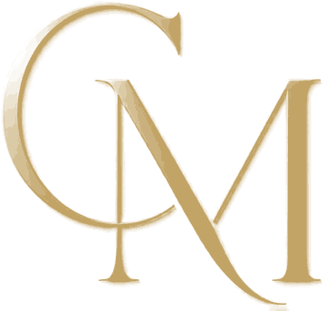
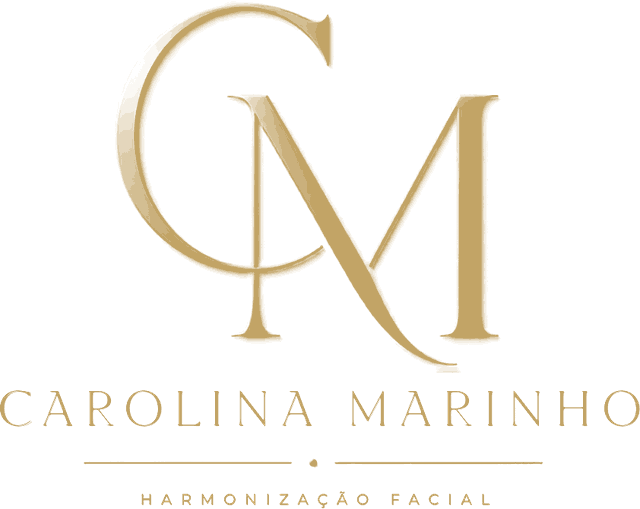

Cirurgiã-dentista · Harmonização Orofacial
Dra. Carolina Marinho
Critério antes de procedimento — cada rosto, uma leitura própria.
Agendar avaliação pelo WhatsAppAtendimento na Barra da Tijuca e em Nova Iguaçu
CRO-RJ 54256
Sobre
Harmonia começa pela escuta
Sou a Dra. Carolina Marinho, cirurgiã-dentista com atuação em Harmonização Orofacial. Meu trabalho começa antes de qualquer procedimento: na leitura das proporções, da musculatura e da história de cada rosto.
Na avaliação, explico com calma o que pode ser indicado para você — e também o que não é. Naturalidade, equilíbrio e segurança orientam cada decisão.
Dra. Carolina Marinho · Cirurgiã-dentista · CRO-RJ 54256
Tratamentos
O que pode ser avaliado
-
Toxina botulínica
Atua na musculatura de expressão. Pontos e doses são definidos a partir da leitura do seu rosto em movimento.
-
Preenchimento com ácido hialurônico
Repõe volume e suporte em regiões específicas, respeitando as proporções individuais.
-
Bioestimuladores de colágeno
Estimulam a produção de colágeno do próprio organismo, de forma gradual.
-
Fios de PDO
Fios absorvíveis que oferecem suporte aos tecidos. A indicação depende das características de cada pele.
-
Rinomodelação
Abordagem sem cirurgia para ajustes de contorno do nariz, quando há indicação clínica.
-
Tratamento de papada
Abordagens para a região abaixo do queixo, avaliadas caso a caso.
Cada tratamento é indicado somente após avaliação clínica individual. As respostas variam de pessoa para pessoa.
Depoimentos
Quem já passou pela avaliação
[Depoimento 1 — insira o texto aqui]— [Nome ou iniciais]
[Depoimento 2 — insira o texto aqui]— [Nome ou iniciais]
[Depoimento 3 — insira o texto aqui]— [Nome ou iniciais]
Onde atendo
Dois endereços, o mesmo critério
Barra da Tijuca
Rio de Janeiro · RJ
Nova Iguaçu
Baixada Fluminense · RJ
Atendimento somente com hora marcada. Dias, horários e endereço são informados no agendamento pelo WhatsApp.

Vamos conversar sobre o seu rosto?
A avaliação é o primeiro passo: um momento para entender o que você busca e o que é indicado para você.
Agendar avaliação pelo WhatsAppDra. Carolina Marinho · CRO-RJ 54256